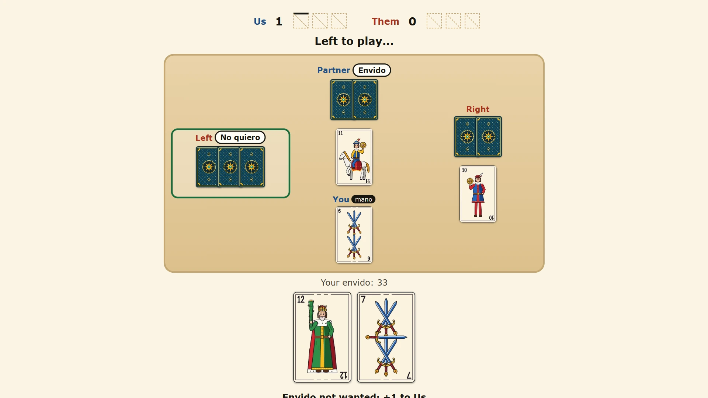

Trucowise — free Argentine truco online
The card game of Argentina and Uruguay, with the 40-card Spanish deck. Sing envido, call truco and bluff the computer at three levels, play 2 vs 2 with a computer partner, or invite friends to a room.


How to play truco
Each player gets three cards. A hand is played in up to three rounds called bazas: everybody plays one card and the highest card wins the baza. Win two bazas and you win the hand. The player who leads the first baza is the mano; the mano moves one seat every hand. The winner of a baza leads the next one.
When the two highest cards in a baza are equal, the baza is a tie, a parda. If the first baza is parda, the second decides the hand. If you win the first and the second is parda, you win. If all three are parda, the mano wins.
The cards, highest first
Truco does not rank cards by number. From highest to lowest: the ace of swords, the ace of clubs, the seven of swords, the seven of coins, then every three, every two, the aces of cups and coins, the kings (12), the knights (11), the pages (10), the sevens of cups and clubs, the sixes, the fives and the fours. The deck has no eights or nines.
Envido
Before you play your first card you may sing Envido (2 points), Real Envido (3) or Falta Envido (the points the leading side still needs to win the game). The other side answers Quiero (accept), No quiero (refuse) or raises. If they refuse, you score the calls made before the last one, or 1 point for a single call. If they accept, the best envido wins them all.
Your envido is two cards of the same suit: 20 plus their numbers, with the page, knight and king counting 0. A seven and a six of swords make 33. With no two cards of one suit, it is your highest single card. Ties go to the player nearer the mano. The envido must come first: once the truco is accepted it is too late, but if somebody calls truco before anybody has sung, you may answer with envido first.
Truco, retruco and vale cuatro
On your turn you can call Truco: if it is accepted the hand is worth 2 points instead of 1. The side that accepted may later raise to Retruco (3), and the other side to Vale Cuatro (4). Refusing ends the hand at once and gives the caller the value before the raise: 1, 2 or 3 points. You may also fold, going al mazo: the other side takes what the hand was worth.
Flor
Flor is optional, and off by default. With flor on, three cards of one suit are a flor: sing it before your first card for 3 points, and the envido is cancelled. If the other side also has flor they can answer Contraflor (the best flor wins 6), Contraflor al resto (the best flor wins the game's remaining points), or Con flor me achico (they back down and you take 4).
Points: games to 15 or 30
Points count as soon as they are won, and the first side to reach the target wins at once. A game to 30 is split into malas (the first 15) and buenas (the last 15). The score is drawn the traditional way, in squares of five strokes.
Three ways to play
1 vs 1 against the computer has three levels. Easy goes by the look of its cards. Medium works out the odds of its envido and its hand. Hard remembers every card played, reads what your calls say about your cards, and bluffs more often.
2 vs 2 puts a computer partner opposite you against two computer opponents. Partners sharing the highest card win the baza together.
Friend online opens a room for 1 vs 1 or 2 vs 2. Send the link, or read out the six-letter code. The host deals, and each player only ever receives their own cards, so nobody can peek. Nobody needs an account.
Tips for winning
Count your envido before you play a card: 27 or more is usually worth singing. Keep your best card for the baza that matters, call truco when the hand is already half won, and remember which aces and sevens have been played. A bluff works best once, so do not call truco on nothing every hand.
More card and board games
For a two-player board game, try Rookwise (chess) or Gomowise (Gomoku, five in a row). For four players around one table, Pawnrush is Ludo.
More like this: 2-player games online · Multiplayer browser games